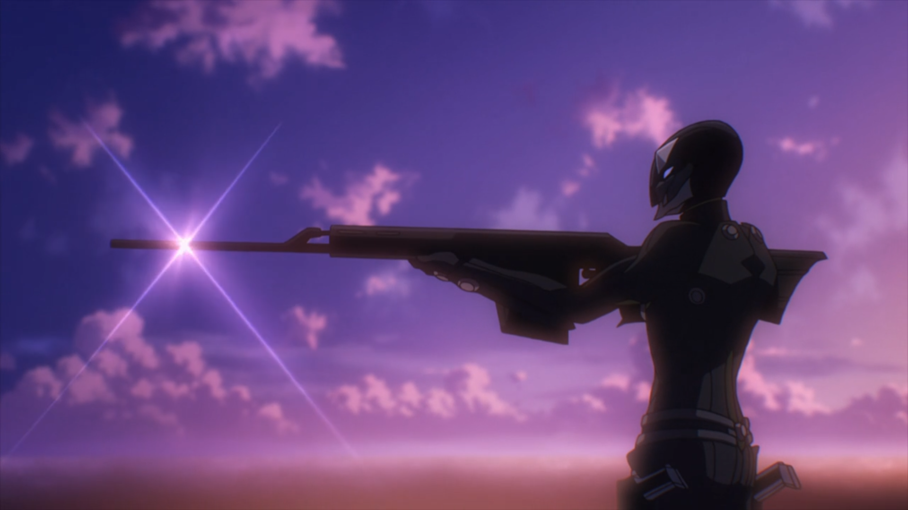
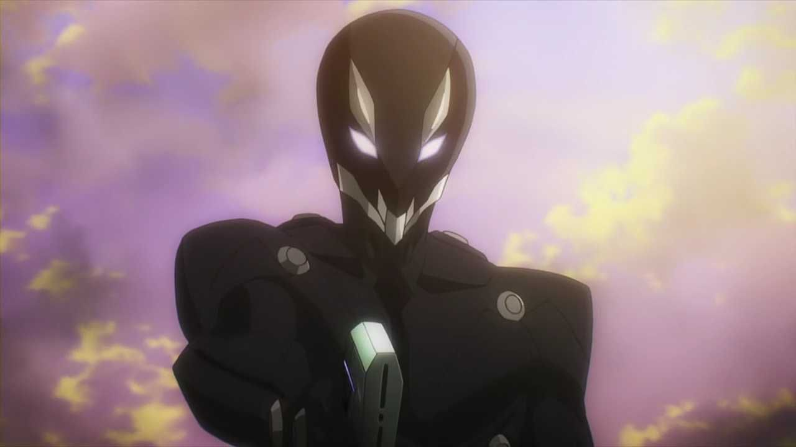

Trident
A Specialized CAD based off the long-barreled Silver Series Silver Horn. It is inputted with most of Tatsuya's high level Decomposition magics. Tatsuya has used this CAD to cast high precision magic, decomposing needle-sized holes which target his opponents' nerves and blood vessels to incapacitate and cause severe pain. It is customized specifically to activate three consecutive magics into one Magic Sequence. In the Battalion, Trident
is the name given to this merciless triple Decomposition magic as well as the CAD that performs this. This is Tatsuya's favored instrument. This CAD has interchangeable cartridges loaded with different types of magic.
A large caliber rifle CAD designed specifically for Tatsuya to use Strategic Level Decomposition Magic "Material Burst." It (Third Eye) does not fire a physical projectile. Thus acceleration and movement magic sequences are not needed. The rifle is connected to a satellite to allow for precision targeting. With this CAD, Tatsuya was able to hit a 50mg drop of water from 80 km away. Due to its nature as the only weapon Material Burst can be used reliably and quickly with at long distance, the key card to the CAD case is kept by Major Kazama and the CAD is maintained by the engineer Captain Sanada. Captain Sanada is also the one that keeps the voice-recognition mechanism's password: "Form is Emptiness, Emptiness is Form"(Anime)/"Vanity of vanities, all is vanity"(Light Novel). It is kept at the Independent Magic Equipped Battalion's headquarters.
Bulletproof, heat resistant, shock resistant, and also resistant to biological and chemical weapons and a simple motion supplement system. The Flying Device was also attached to the belt. When coupled with the shock resistant function, it can completely nullify the recoil when firing, so he can also fire in the air.
